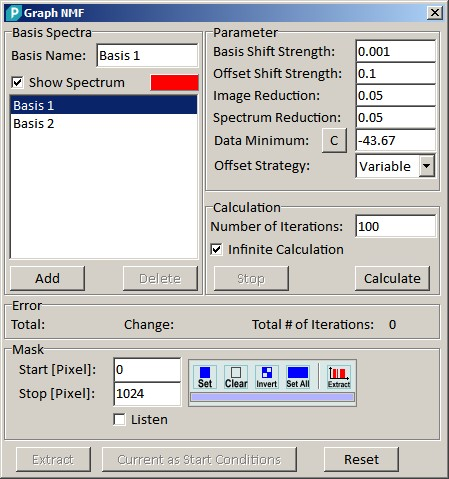
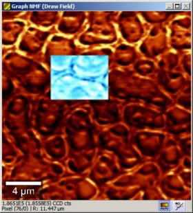
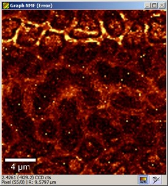
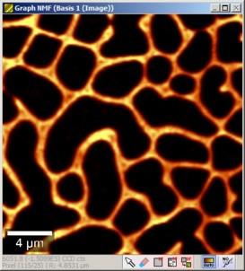
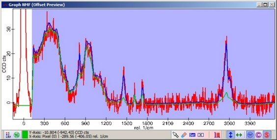
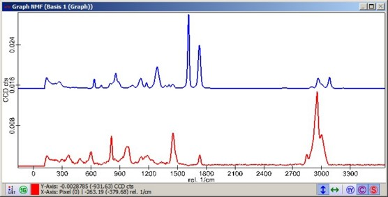

|
描述
非负矩阵分解是一种多元分析，同时创建强度分布图像及其所属光谱。它利用图像和光谱都必须具有正值才能成为有意义的結果这一事实。计算是一个迭代过程，包含三个部分：
第一次迭代从随机开始。此对话框是WITec Project Plus软件包的一部分。
另请参见
输入和结果
输入：
一个光谱拉曼图像数据集
结果：
每个组分的一个图像和一个光谱
用户界面

在此组中可以定义描述数据集所需的基础光谱数量。
添加（按钮）
向描述模型添加一个新的基础光谱。
删除（按钮）
从模型中删除选中的基础光谱。
最小基础光谱数量为2。
列表框
列表框显示所有基础光谱的名称。要在不同组分之间切换，请单击列表框中的一个条目。
所属信息（名称、显示光谱和图谱颜色）将更改，此外图像预览窗口将显示分布图。
基础名称（编辑框）
所选组分的名称将显示在编辑框中。在提取数据之前，您可以更改组分的名称。该名称将用作数据对象的标题。
显示光谱（复选框）
取消选中该复选框将把基础光谱从光谱预览中排除
颜色框
在此您可以定义光谱的颜色。
此组中的参数将改变算法的行为。
基础偏移强度
可能有许多仅具有正值的解。为了获得独特且有意义的結果，有必要将基础光谱推向数据。
该值是在迭代开始之前添加到归一化基础光谱的区域。
偏移偏移强度
可能有许多仅具有正值的解。为了获得独特且有意义的結果，有必要将基础光谱推向数据。
该值是在迭代开始之前添加到偏移光谱的偏移量。
图像缩减
在高光谱数据集上应用算法非常耗时。除了图像掩码之外，还可以通过此因子减少用于计算的像素数量。
从掩码中随机添加像素，直到所有分布至少具有其总强度的这一部分。
每次迭代时，选中的像素将改变。如果所有基础光谱都已找到，请将此参数设置为接近1。
光谱缩减
在高光谱数据集上应用算法非常耗时。除了光谱掩码之外，还可以通过此因子减少用于计算的光谱像素数量。
从光谱掩码中随机添加像素，直到所有基础光谱至少具有其总强度的这一部分。
每次迭代时，选中的像素将改变。如果所有基础光谱都已找到，请将此参数设置为接近1。
数据最小值
对于计算，数据集的所有值必须为正。因此，在计算之前向数据添加一个偏移量。启动对话框后，搜索数据集的最小绝对值并复制到编辑框中。由于某些预处理，最小值可能太低（例如背景扣除步骤计算错误）。在这种情况下，请将此值略微调整到基线噪声以下。
偏移策略
可以选择两种不同的偏移计算策略。
迭代次数
定义将使用的迭代次数。
无限计算
如果启用此复选框，计算将持续运行直到用户按下停止按钮
停止（按钮）
停止NMF计算。
计算（按钮）
启动NMF计算。计算期间预览窗口会定期更新。
计算期间这些值会更新。
总计
拟合与数据集之间的平均误差。如果该值减小，则拟合变得更好。
变化
上次和当前平均误差之间的差值。如果此值为正，则拟合变得更好。如果此值在正值和负值之间波动，请增加图像缩减和光谱缩减的值。
总迭代次数
显示迭代次数。
您可以简单地转动滚轮或编辑数字来定义用于相互扣除光谱的加权因子。
此组显示标准的掩码操作工具。
提取（按钮）
提取基础光谱和分布图像。
当前作为起始条件（按钮）
要找到基础光谱，只需要数据集中少量光谱。但这种情况只有所选像素的分布图是有效的。为了计算所有像素的分布图，请按下此按钮。之后可以扩展图像掩码并重新启动计算。分布图现在用作算法的起始条件。
重置
将所有基础光谱和分布图重置为随机。如果添加了新的基础光谱且计算之前已运行，从而更改了基础光谱和分布图，可以使用此功能。
预览窗口
图谱NMF（绘制场）

图像数据显示光谱的总和。使用此图像预览窗口的绘制场来选择应用于计算的像素。
图谱NMF（误差）

显示拟合与数据之间的平均误差。高值可能提示需要额外的基础光谱。
图谱NMF（分布图）

显示当前选中的基础光谱的分布图。
拟合预览和掩码

拟合图谱预览窗口以红色显示原始光谱，以蓝色显示拟合预览，以绿色显示偏移。
只需在预览图像中单击即可查看所选光谱。
使用掩码定义哪些光谱区域应被NMF计算考虑。
基础光谱

此图谱预览窗口显示归一化的基础光谱。